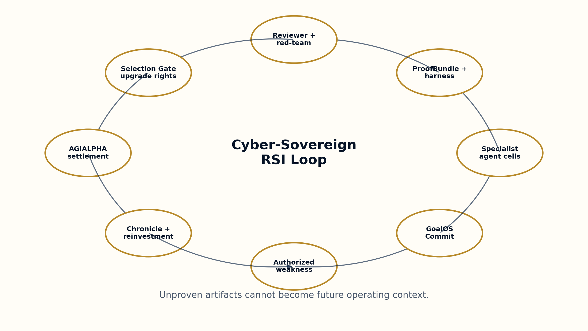
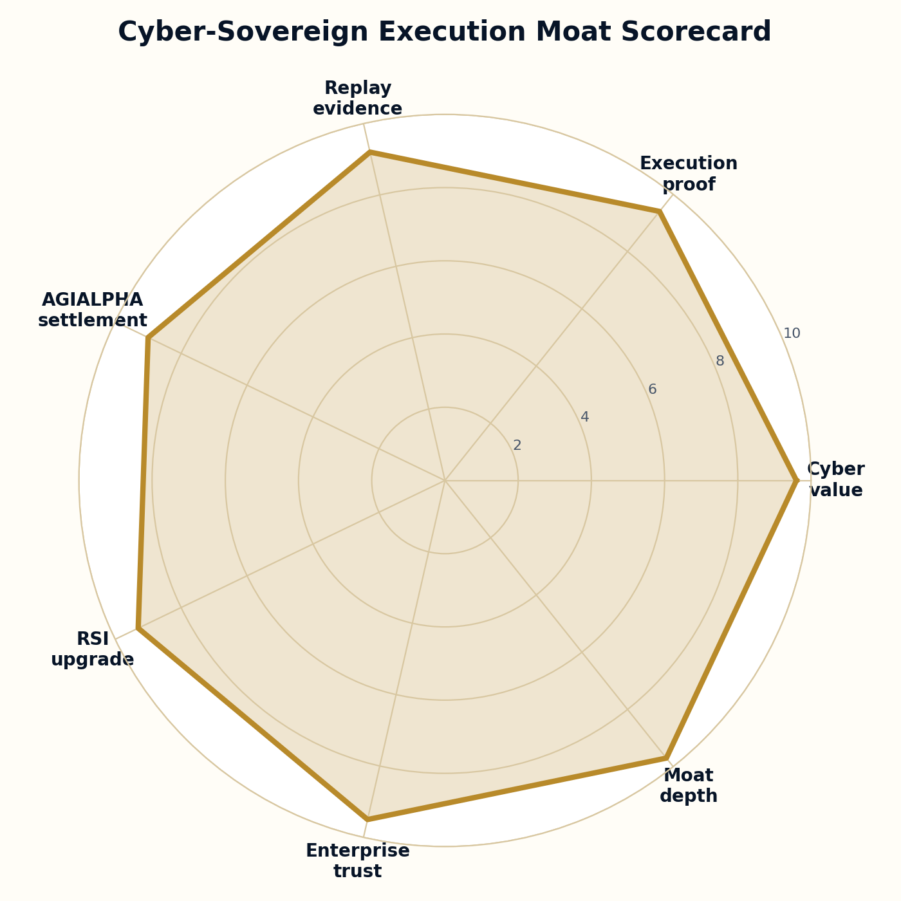
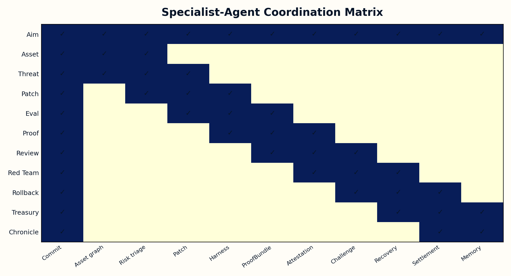

A defensive cyber RSI institution turns security weaknesses into replayable Evidence Dockets, validated remediations, reusable controls, and compounding enterprise resilience.
Adds the hard cyber execution moat: defensive proof runs, replayable remediation evidence, evaluator harnesses, reviewer/red-team validation, AGIALPHA settlement, rollback readiness, and Chronicle memory.
Cyber and operational risk compounds when security work is isolated rather than evidence-backed.
Coordinates mission funding, bonds, proof submission, review, proof-card actions, credentials, reputation, settlement, and reinvestment.
Only artifacts that survive evidence, review, red-team challenge, rollback readiness, and Selection Gate approval can shape future work.
GoalOSCommit defines systems, permissions, risk boundary, and forbidden actions.
Asset cartographers, triage agents, remediation builders, evaluator operators, proof engineers, reviewers, red-team court, rollback desk, and Chronicle Office coordinate through evidence.
Baseline, SBOM/CBOM, VEX-style note, remediation artifact, harness results, reviewer attestation, cost/risk ledger, rollback path, and settlement receipt.
The accepted artifact earns scoped upgrade rights only after Selection Gate approval.



| Type | Examples |
|---|---|
| Skills | Cyber asset graph construction, Defensive vulnerability triage, Defensive remediation generation, Security regression harness design, Evidence Docket engineering, Reviewer and red-team validation, AGIALPHA proof-settlement routing, Sovereign RSI selection |
| Plans | Cyber Mandate Epoch Plan, Execution Moat Evidence Plan, Verifier Coverage Plan, Capability Reinvestment Plan |
| Goals | Reduce verified cyber risk, Increase trusted deployment velocity, Build a replayable evidence graph, Compound corporate resilience, Advance the productive-capacity frontier |
Experimental proof-card template. It does not claim achieved AGI, achieved superintelligence, guaranteed ROI, token appreciation, legal/tax/security approval, offensive exploit capability, Ethereum mainnet deployment, or Kardashev Type II achievement.